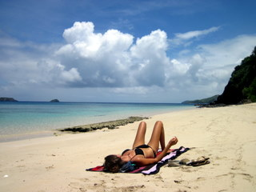
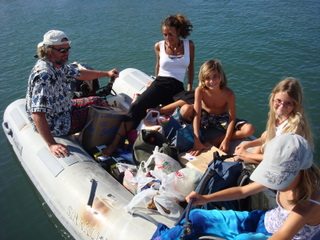
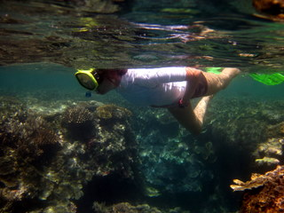
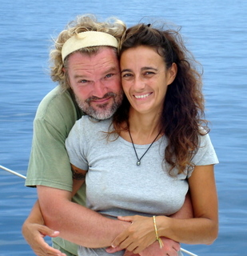

|
Christel est venue nous rejoindre aux Fidji. Elle a partagé notre vie de vacanceurs entre le 15 octobre et le 20 décembre 2010, en nous accompagnant entre autres pour la longue traversée des Fidji vers La nouvelle Zélande. Elle a souhaité publier ses pensées, remarques et autres impressions sur le site. Elle ne possède aucune expérience de voile et n'a jamais participé à Koh Lanta.
Après 4 épisodes, elle s'est malheureusement épuisée... Dommage !!!!
|
|
23/11/2010
Vous avez été plusieurs à me demander mon ressenti par rapport à mon voyage…
Je me suis facilement adaptée à cette nouvelle vie marine de par la légèreté de la situation et la bonne entente, ambiance régnant à bord. La chose la plus surprenante fut la perte de la notion de temps. On ne sait jamais vraiment ni quelle heure ni quel jour on est. Le bateau est perpétuellement en mouvement de par la mer, qu’elle soit calme ou mouvementée, et de par le vent qui ne souffle guère ou de plus belle. Rajouté à cela, un tas de petits bruits différents qui, chaque soir, nous entourent mais toujours le même bruit de fond, les éoliennes qui tournent. De temps en temps, des bruits bien plus forts me réveillent en sursaut en plein milieu de la nuit comme le kayak se faisant emporter par le vent avant d’atterrir sur le roof au pied du mât... J’ai aussi embêté Eric et Cécile un certain nombre de fois en leur demandant qu’elle était ce bruit distinct des autres comme les minis crevettes mangeant je ne sais quoi sur la coque extérieure ; très particulier comme bruit, d’ailleurs…
Sinon, comme dit auparavant, je me suis bien habituée à la vie sur un bateau car chaque jour, chaque paysage, chaque situation, chaque personne, chaque houle, chaque noeud qu’on rencontre est différent. Dès lors, étant en continuel renouvellement, le temps passe vite et chaque moment est unique. C’est pourquoi je peux qualifier ce voyage, cette expérience d’unique et d’inoubliable. Je la vis positivement et j’essaye d’en retirer un maximum, même si tous les jours ne sont pas faciles car je me sens à l’autre bout du monde, déconnectée, loin de ma vie et des gens que j’aime (NDLR Merci pour nous !!!). Mais dans ces moments-là, je regarde dehors, je vois un magnifique paysage ou coucher de soleil, et je relativise en me rendant compte que l’essentiel est de profiter chaque instant de chaque petite belle chose que la vie offre et je souris en me rendant tout-à-fait compte de la chance que j’ai… A très vite pour vous donner mes impressions avant la grande traversée vers la Nouvelle Zélande…
|

|
|
4/11/2010
N’étant pas très assidue à vous écrire régulièrement, non pas par manque d’envie mais plutôt par manque de temps, je profite que nous soyons en traversée pour vous donner mes dernières impressions.
Nous avons parcouru pendant 3 semaines de nombreuses iles au Nord de l’ile principale, Viti Levu, variantes de tailles et de couleurs mais avec toutes les mêmes particularités : leur beauté et l’accueil chaleureux des locaux qui chantonnent à longueur de journée des Bula, Bula, Bula,...Ca veut dire: "Bonjour". Tout cela se résume en un seul mot : c’est TOTOKA !
Chaque jour, à chaque instant, je profite au maximum de cette chance et de l'opportunité que j’ai le luxe de vivre... Je me rends compte que je ne pourrais pas en bénéficier autant si Cécile & Eric n’avaient pas fait tout le travail. Ils ont pu régler les problèmes et acquérir en 1 an et demi la maturité nécessaire pour me permettre de vivre cette expérience inoubliable !
En ce jour, après une demi journée de ravitaillement au Port de Denarau, nous sommes repartis pour 3 semaines dans les eaux des Fidji afin de se rendre dans le Sud pour voir un des plus beaux endroits au monde. On va voir des coraux et des poissons en tout genre, des plus petits ou plus grands, comme les barracudas ou requins… Je garde espoir pour les dauphins…
D’ici ma future impression sur le snorkeling avec les carnassiers, je vous remercie de me suivre à la fois par vos messages sur le site ainsi que sur l’adresse d’Eric qui me font très plaisir et qui m’accompagnent tous les jours dans ce voyage…
|

|
|
21/10/2010
Cela fait plusieurs jours que je veux vous écrire mais la vie n’est pas de tout repos au pays des voyageurs. Entre les cours des enfants, les taches respectives de chacun, les visites au village, les rencontres avec les locaux, les snorkelings, les ballades, les apéritifs au soleil,…
Sur le Let It Be, il y règne une ambiance de détente, de plaisir, de rire entre les blagues continues d’Eric et son perpétuel plaisir à charrier tout membre de l’équipage, les rires des enfants et leur facilité à pouvoir créer des personnages fantastiques avec le minimum d’objets, les chansons chantonnées tout au long de la journée et pour couronner le tout, la préparation des plats d’Eric ! Ils s’en dégagent un tel raffinement, une recherche de saveurs et une odeur enivrante afin d’entendre plusieurs fois des ‘hum… qu’est ce que ça sent bon !’ Un réel plaisir, je vous assure !
Pour ma part, Il est 17h30, je vous écris d’un de mes endroits favoris du Let It Be, le petit siège qui se trouve tout devant, comme si on était les pieds dans l’eau ou tout simplement dans l’eau, avec en arrière fond, les poissons qui bondissent et rebondissent de l’eau. Depuis une petite heure, la lune se lève tout doucement entre les nuages blancs pour donner un effet de calme et de quiétude totale dans cet endroit paradisiaque. Je n’ai pas encore eu l’occasion d’avoir un dauphin comme spectateur mais je suis sûre qu’un jour il viendra…
L’autre grande nouvelle est que j’ai expérimenté le snorkeling dans les eaux profondes, tropicales, bleutés, verdâtres, bleu clair, bleu turquoise, bleu émeraude,… c’était très impressionnant pour une néophyte comme moi. Cécile m’a appris les bases et nous sommes partis à la découverte de ces magnifiques coraux de tellement de couleurs, de formes diverses, de poissons,… un vrai monde sous marin à regarder pendant des heures de part sa beauté et son mouvement continu… à la prochaine pour de nouvelles aventures sur le Let It Be…
|

|
|
17/10/2010
J’ai eu l’autorisation précieuse du capitaine de pouvoir donner mes impressions sur leur site.
Il faut vraiment venir voir de près comment ils vivent pour comprendre la signification propre de faire un tour du monde en voilier.
Ils parlent Let It Be, dinghy, eau de mer, eau douce, moteur, voile, traversée, marée haute, marée basse, patate, mouillage,… j’ai dû m’habituer à leur vocabulaire bien différent de chez nous. Ils ne connaissent pas le dernier tube en date ‘I got a feeling’ mais ils connaissent les derniers chants de l’église du coin ou les derniers sons des instruments locaux,… Ils voguent entre pétole, mer calme ou agitée, entre paysages somptueux et insolites, entre couleurs variantes et changeantes d’heures en heures, entre différents villages de locaux remplis de charme et de simplicité. Ils parlent avec leur cœur et leur ressenti. Ils créent leur propre repas si délicieux et originaux avec les produits locaux. Ils savourent avec tellement de joie dans leurs yeux les différentes petites choses que je leur ai ramenées comme un simple saucisson ou un bonbon Haribo.
Pour ma part, j’ai déjà vécu des moments mémorables comme ces enfants qui me regardent avec un sourire d’une générosité et simplicité à fendre le cœur ou comme un bon verre de Komo (si bien fait par Eric) avec une belle musique et en arrière plan une vue à couper le souffle. La nuit, comme Cecile me l’a fait remarqué, la lune de ce coté ci du monde est dans le sens contraire de chez nous. Quoi de plus beau que les choses les plus simples de la vie à vivre au jour le jour… moi, je vous dis, je comprends déjà qu’ils ne veulent pas rentrer au pays car ils ont l’essentiel de la vie dans avec eux… à suivre…
|

|